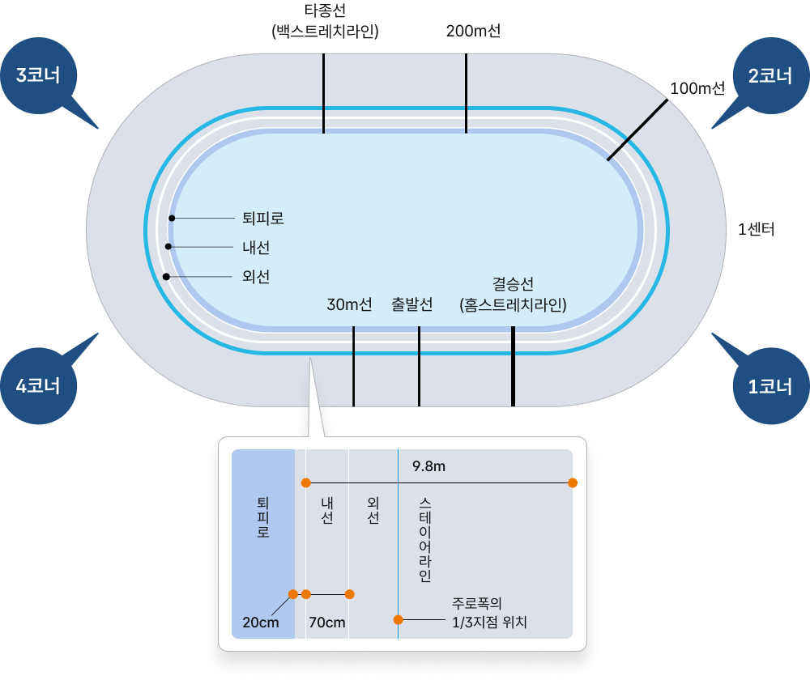

<!-- Header -->
<%- include('../_ejs/top.ejs', {
    title: "KCYCLE 경륜",
    url: "../../"
}) %>

<!-- 레이아웃 -->
<div class="lytLayout">
    <div class="layoutArea">

        <!-- 상단영역 -->
        <div class="layoutTop">
            <!-- Top -->
            <%- include('../_ejs/header.ejs', {
                url: "../../"
            }) %>
        </div>
        <!-- //상단영역 -->

        <!-- 중단영역 -->
        <div class="layoutContainer" id="container">

            <!-- 서브 콘텐츠 영역 -->
            <div class="layoutSubCont">

                <!-- 서브 컨텐츠 내용이 들어오는 영역-->
                <!-- 서브 탑 (타이틀) -->
                <%- include('../_ejs/sub_top.ejs', {
                    location: ['경륜 라이브러리', '경륜 알아보기'],
                    subTitle: '벨로드롬 가이드',
                    subText: '경륜, <b>자전거 트랙 경기</b>의 무대!<br/><b>벨로드롬</b>에 대해 알아봐요!',
                    url: "../../",
                    visualClass : "bg01",
                }) %>

                <div class="layoutContArea">

                    <div class="comSubInfo">
                        <h2 class="infoTit">자전거 트랙 경기의 매력을 한껏 느낄 수 있는 경륜 전용 경기장, 벨로드롬</h2>
                        <p class="info">벨로드롬은 자전거 트랙 경기를 위해 만들어진 경기장으로, 타원형 또는 원형으로 설계되어있습니다. <br/>
                            선수는 물론, 관객들의 안전을 최우선으로 한 벨로드롬은 경기에 필요한 다양한 시설물과 첨단 판정 장비들을 두루 갖추고 있습니다.</p>
                    </div>

                    <div class="cptSection">
                        <div class="sectArea">
                            <div class="comTitH2">
                                <h2>벨로드롬 기준범위</h2>
                            </div>
            
                            <div class="comBasicList">
                                <ul class="listGroup">
                                    <li class="item">경륜시행 관계법령에서 기준하는 경기장 시설 및 설비에 대한 사항은 통상적으로 아마추어 사이클 경기 시행과 관련하여 <em>UCI (Union Cycliste Internationale : 국제사이클연맹)에서 공인하는 국제대회 개최수준의 경주로 규격범위에 대체로 부합</em>하고 있습니다.</li>
                                    <li class="item">더불어 경륜경기를 전문으로 운영하기 위한 특성상 이와 같은 경주로 시설기준과는 별도로 공정, 안전의 확보를 위해 선수, 심판, 방송 등 경주운영에 대한 별도의 설비기준과 고객 여러분께 보다 쾌적한 관람환경을 제공해 드리기 위해 관람석 및 편의시설 설치에 대한 기본사항 또한 관계법령의 조문에 명시하고 있습니다.</li>
                                </ul>
                            </div>

                            <div class="comImgWrap">
                                <div class="imgGroup">
                                    <div class="imgArea">
                                        
                                    </div>
                                </div>
                            </div>
                        </div>
                    </div>

                    <div class="cptEtcInfo">
                        <div class="infoBox">
                            <dl class="info">
                                <dt>
                                    <em class="tit">자전거 경주로는 전체가 평평하지 않고 안쪽으로 경사진 타원형이에요 </em>
                                    <span class="subTit">경주로 시설·설비기준 주요 사항 (경륜·경정법 시행령)</span>
                                </dt>
                                <dd>
                                    <div class="infoList">
                                        <ul class="listGroup">
                                            <li class="item">
                                                광명 경륜장의 자전거 경주로는 <em>길이 333.3m</em>에 <em>폭이 9.8m</em>이며 경사로의 <em>각도는 4~34°</em>입니다.
                                            </li>
                                            <li class="item">
                                                1주회의 <em>길이는 300m 이상</em>에 <em>폭이 7m 이상</em>의 전체가 평평하지 않고 안쪽으로 <em>경사진 원형 또는 타원형</em>이며 경사로의 <em>각도는 곡선의 경우 25~45°, 직선의 경우 2~15°</em>입니다.
                                            </li>
                                            <li class="item">
                                                <em>재질은 목재, 아스팔트, 콘크리트</em>가 쓰이고, ​경주로 안쪽에 <em>4m 이상 퇴피로를 확보</em>하고, ​관람객의 안전을 위한 차단 시설을 확보해야 합니다.
                                            </li>
                                        </ul>
                                    </div> 
                                </dd>
                            </dl>
                        </div>
                    </div>

                    <div class="cptSection">
                        <div class="sectArea">
                            <div class="comTitH2">
                                <h2>벨로드롬 구조</h2>
                            </div>

                            <div class="comImgBox">
                                <div class="imgWrap">
                                    
                                </div>
                            </div> 
                                        
                            <div class="comBasicList mgH">
                                <ul class="listGroup">
                                    <li class="item">
                                        <b class="sTit">내선</b>
                                        <i class="sTxt">경주로의 가장 안쪽에 그어진 백색선으로서 경주로 길이(333.33m)를 측정하는 기준선입니다.</i>
                                        <div class="addGuide">
                                            <p class="guide">경주 중 선수는 내선의 바깥쪽으로 주행해야돼요.</p>
                                        </div>
                                    </li>
                                    <li class="item">
                                        <b class="sTit">외선</b>
                                        <i class="sTxt">내선의 바깥쪽에 위치하는 백색선으로서 내·외선간을 선점하여 주행하는 선수는 여타선수의 진로진입 및 안쪽추월 등의 방해 행위로부터 주행의 우선권을 갖게 됩니다.</i>
                                    </li>
                                    <li class="item">
                                        <b class="sTit">스테이어라인</b>
                                        <i class="sTxt">경주로 폭의 약 ⅓지점을 의미하는 청색선을 말합니다.</i>
                                    </li>
                                    <li class="item">
                                        <b class="sTit">100m선</b>
                                        <i class="sTxt">출발로부터 100m구간임을 의미하며, 재출발 여부를 결정하는 기준선입니다.</i>
                                    </li>
                                    <li class="item">
                                        <b class="sTit">200m선</b>
                                        <i class="sTxt">최종주회에서 결승선에 도달하기까지 200m구간임을 의미하며, 대열 선두선수의 전륜 최전부가 이 선에 도달하는 시점에서부터 해당경주의 200m 구간기록을 자동으로 측정합니다.</i>
                                    </li>
                                    <li class="item">
                                        <b class="sTit">30m선</b>
                                        <i class="sTxt">결승선 도달전 30m지점에 그어진 선으로 최종주회에서 이 선을 넘어 낙차 또는 자전거 고장을 일으킬 경우 자전거를 끌거나 들고서 경주를 완료할 수 있습니다.</i>
                                    </li>
                                    <li class="item">
                                        <b class="sTit">타종선(백스트레치라인)</b>
                                        <i class="sTxt">결승선(홈스트레치라인)의 정반대 지점에 그어진 선으로 최종주회 전회 대열 선두선수가 이 선에 도달한 시점부터 타종을 실시하여 타종선이라고도 합니다.</i>
                                    </li>
                                    <li class="item">
                                        <b class="sTit">결승선(홈스트레치라인)</b>
                                        <i class="sTxt">출발 위치로부터 25m전방에 위치하며 주회수 변경의 기준이 되는 선으로 전체 72㎝폭의 흰색 바탕 중앙에 그어진 4cm 두께의 선을 말합니다.</i>
                                        <div class="addGuide">
                                            <p class="guide">최종주회의 경우, 순위 결정의 기준이 되는 결승선으로 말합니다.</p>
                                        </div>
                                    </li>
                                </ul>
                            </div>
                        </div>
                    </div>

                </div>

                    
                <!-- 서브 바텀 (담당자) -->
                <%- include('../_ejs/sub_btm.ejs', {
                    team: '경륜심판팀',
                    name: '백창수',
                    phone: '02-2067-5922',
                    url: "../../",
                }) %>
                
                <!-- //서브 컨텐츠 내용이 들어오는 영역-->
                
            </div>
            <!-- //서브 콘텐츠 영역 -->

        </div>
        <!-- //중단영역 -->

        <!-- 하단영역 -->
        <div class="layoutFooter">
            <!-- Footer -->
            <%- include('../_ejs/footer.ejs', {
                url: "../../"
            }) %>
        </div>
        <!-- //하단영역 -->

    </div>
</div>


<!-- Bottom -->
<%- include('../_ejs/bottom.ejs', { }) %>